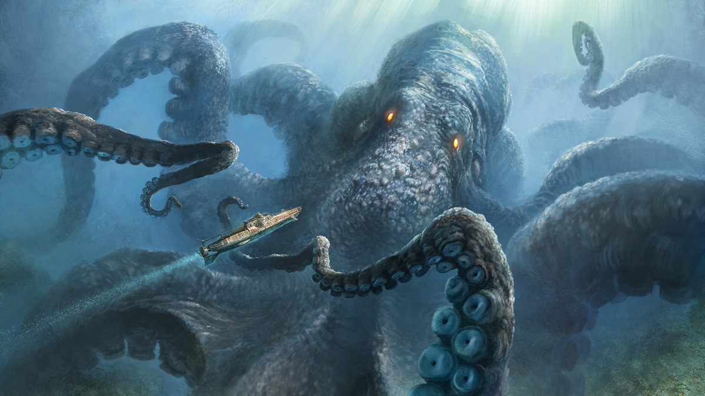

About The Kraken
The kraken is a legendary sea monster of giant size from Scandinavian folklore. According to Norse Sagas, this monster dwells off the coast of Norway and greenland. It is said that it terrorizes nearby sailors.
The kraken hunting a ship.
Krakens characteristics
- Tentacles bring down ships.
- Physically strong and agile.
- Not immortal, can be killed.
Associated monsters
The kraken has been asociated with some other animals/monsters. Click on the link below for more information